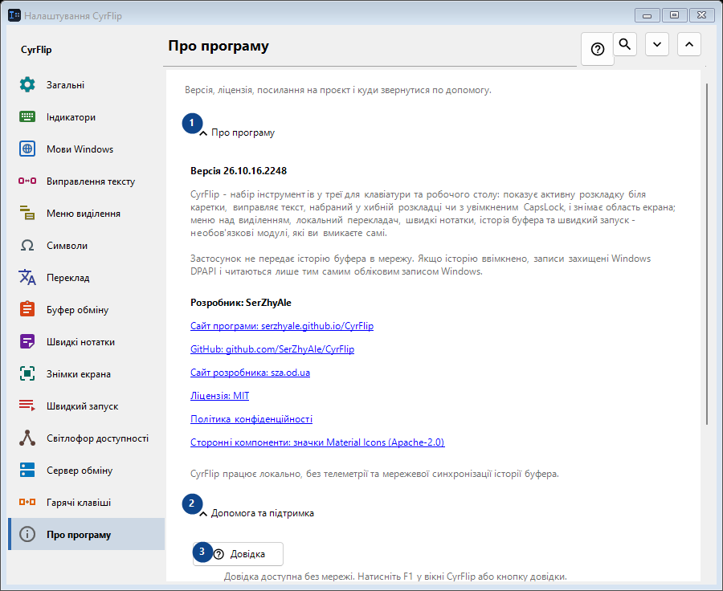
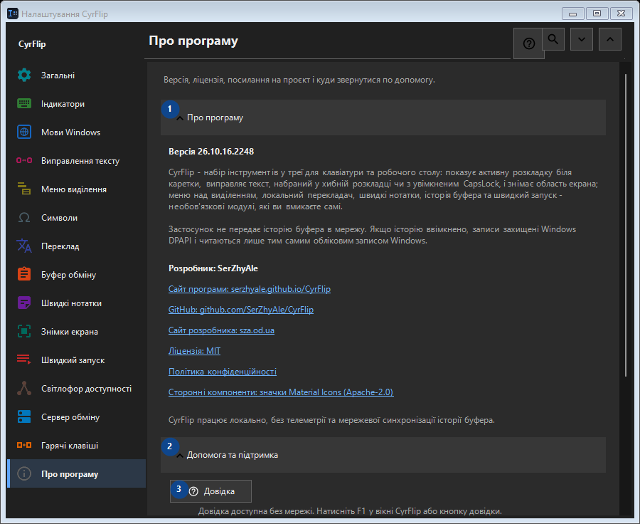

Про програму
Для чого це вікно
Версія, ліцензія, посилання на проєкт і куди звернутися по допомогу.


Порядок дій
Налаштування застосовуються одразу. Обов’язкового порядку немає; користуйтеся групами нижче.
Елементи
1. Про програму
Скористайтеся командою, коли потрібна вказана дія. Прочитайте запит підтвердження перед згодою.
Ваші сполучення клавіш2. Допомога та підтримка
Скористайтеся командою, коли потрібна вказана дія. Прочитайте запит підтвердження перед згодою.
Ваші сполучення клавіш3. Довідка
Довідка доступна без мережі. Натисніть F1 у вікні CyrFlip або кнопку довідки.
Ваші сполучення клавіш4. Показати привітання..
Знайомство з CyrFlip і початкове налаштування.
Ваші сполучення клавіш5. Діагностика положення каретки...
Створює локальний звіт про те, як Windows та UI Automation бачать каретку. Потрібен лише якщо мітка не з'являється або малюється не там у певній програмі.
Ваші сполучення клавіш6. Надіслати логи автору..
Збирає логи CyrFlip в один архів і відкриває лист до автора з цим вкладенням. Лист надсилаєте ви самі - CyrFlip нічого не передає в мережу. Історія буфера обміну до архіву не потрапляє.
Ваші сполучення клавіш